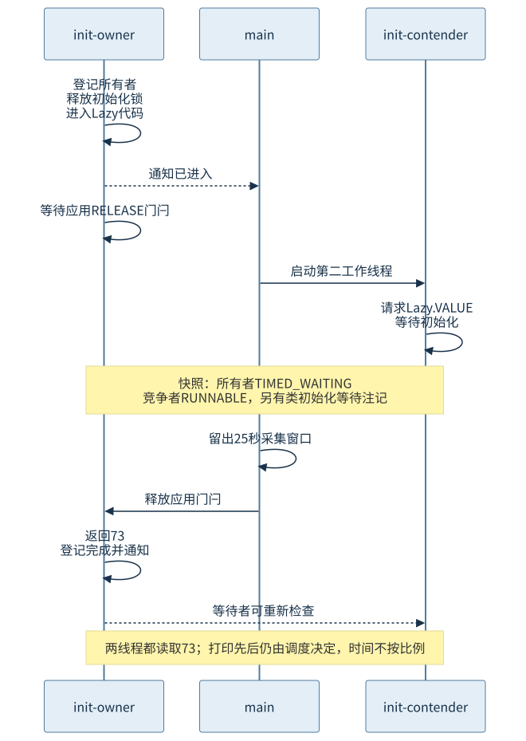

第二篇 · 类文件、类型系统与类的生命周期
第 7 章 连接、解析与初始化
找到类、关联成员、执行静态赋值是不同的承诺。只有保留这些阶段和状态，才能解释“类明明存在，为什么仍不能使用”。
本章以 Java 虚拟机（Java Virtual Machine，JVM）规范与 Java 开发工具包（Java Development Kit，JDK）25.0.5.0.2 的 HotSpot 为基线。前置阅读：第 5 章验证与第 6 章身份和访问。
窄屏阅读时，宽图、表格和长代码可在各自内容框内横向滚动。
现象：同一个错误名称可能有两个起点
本轮两个独立案例都出现 NoClassDefFoundError。一组缺失库文件，原因链含 ClassNotFoundException；另一组已成功发现类，却在首次静态赋值失败后，第二次使用时报错。如果仅凭错误名称认定“类路径一定错了”，就会把已经失败的初始化状态误当成文件查找失败。先问哪个类、哪个加载器、哪次请求、哪个阶段，再读完整原因链。
7.1 各阶段的职责与时机
7.1.1 必需依赖与可延迟的解析
加载把二进制表示转成运行时类型。连接包含验证、准备和符号引用解析：验证约束类文件与指令类型，准备建立静态存储及默认值等运行基础，解析则把名字和描述符所表达的关联落实到运行时类型与成员。初始化执行类所需的静态初始化逻辑，它又以前面的验证与准备为前提。
这不是要求把整个类所有引用一次性处理完的流水线。解析可以提前，也可以在使用相应引用时发生；虚拟机仍须遵守规范对错误报告时机和结果一致性的约束。一个类已初始化，也不说明它所有未执行分支中的外部方法都已被成功解析。S01

7.1.2 三种成功不能互相代替
CH07-E03 用 initialize=false 的 Class.forName 得到了 Broken 的 Class 对象，随后首次主动读取 Broken.VALUE 才失败。这次发现不承诺该类已初始化；相反，反射或其他操作可能使连接推进，不能把一个 Java 方法返回点当作全部内部阶段的精确边界。CH07-E04 中客户端自身可以进入 main，再因调用外部符号而失败。将“主类已启动”理解为“全部依赖均可用”，同样超出了证据。
定位时保留异常发生的字节码、符号持有者、定义加载器和原因链。第 6 章的转换失败属于运行时类型身份问题；本章的静态／实例形态不匹配属于旧字节码要求与新类定义不符，不能统称成同一种加载失败。
7.2 符号引用解析
7.2.1 类、字段与方法各自关联什么
类引用先从常量池名字出发，结合引用方的定义加载器取得目标类型，并处理访问及失败结果。字段引用包含目标类、名字、字段描述符；查找可能在相关接口和父类中找到实际声明者，访问检查和 static 形态还要与指令契合。方法引用也包含名字与方法描述符，但查找和接口默认方法规则与字段不同，不能简单复用“沿父类找同名项”的口号。
| 符号 | 本章 HotSpot 入口 | 关注结果与检查 |
|---|---|---|
| 类名 | ConstantPool::klass_at_impl | 名字、加载器、解析类型、访问与已记录的解析错误 |
| 字段名及描述符 | LinkResolver::resolve_field | 实际声明者、字段信息、访问与静态形态 |
| 方法名及描述符 | LinkResolver::resolve_method | 解析方法、访问、加载约束；调用指令另有形态检查 |
源码中先得到成员，再检查权限，或按指令补充约束，是具体入口的处理次序；不能以一张概念表断言所有解释器和编译器都做同样的完整查找。解析结果与相关缓存还会用于后续执行，第 8 章再看它们的存储位置。S03
7.2.2 解析所得方法与接收者选中方法
CH07-E01 令 Base receiver = new Derived()。本轮反汇编在偏移 154 是 getfield Base.field:I，在 158 是 invokevirtual Base.number:()I。输出 field=1 virtual=2：字段读取关联 Base 中的那个字段；虚调用则允许按接收者的实际类型选中覆盖实现 Derived.number。即使两个符号都写着 Base，它们的后续使用规则也不同。
锁定 LinkResolver 的虚调用路径分别保存 resolved_method 与 selected_method；可虚分派时按接收者类型及表索引选取，能静态绑定时也有直接使用解析方法的分支。这解释了“解析已经确定一个方法”和“实际运行哪个实现”为何可以同时成立。此处没有采集即时编译后的机器调用形态；去虚化与内联留给第四篇，不凭一次输出判断优化策略。
7.3 静态字段与类初始化方法
7.3.1 默认值、常量属性与赋值指令
Values 中 CONSTANT=41 是编译期常量，类文件为其保留 ConstantValue 属性；RUNTIME=mark(...,42) 虽也为 static final，却由方法调用得到值。本轮 Values.<clinit> 中只有后者对应的调用和 putstatic，不能把 final 当作“没有运行期赋值”的同义词。
// CH07-E01，Values 的实际反汇编节选
public static final int CONSTANT;
ConstantValue: int 41
static {};
0: ldc // "Values.RUNTIME"
2: bipush 42
4: invokestatic // InitializationJourney.mark:(String,int)int
7: putstatic // RUNTIME:I
10: return
需要谨慎区分两层：虚拟机规范 §5.4.2 把默认值归入准备，§5.5 的初始化流程在标记所有者后处理 ConstantValue，再进入相关父类型与初始化方法。锁定 HotSpot 的 java_lang_Class::initialize_mirror_fields 则在建立镜像时遍历带初始值的静态字段并填入常量。实现可以提前完成这类工作，仍须保持规定的可观察语义。不能把实现时点直接改写成规范原句，也不能声称本轮日志观察到了不可直接访问的默认值瞬间。S02S04
7.3.2 读取表达式不总是 getstatic
main 中的 "constant=" + Values.CONSTANT 整体已折叠为字符串，偏移 16 直接 ldc "constant=41"；它没有读取 Values 的静态字段。输出 constant=41、before.runtime 后才出现 Values.RUNTIME 的初始化标记；偏移 32 的 getstatic 才读取该运行期值。准确解释来自当前字节码与日志共同对应，而不是“看到了点号就必定初始化类”。
新建实例、访问声明者的非恒定静态字段、调用静态方法和某些反射等操作会触发初始化；类字面量、initialize=false 的发现以及创建某类型数组并不因此初始化该元素类。继承字段还要看真正声明者。完整触发规则以规范为准，尤其不能把字符串常量或数组描述符的加载误当成元素类的 <clinit> 已执行。
7.4 初始化并发、递归与失败
7.4.1 谁先执行，以及谁已经在执行
E01 第一次读取 Child.VALUE，实际标记顺序是 Parent → HasDefault → Child；无默认方法的 Plain 到显式读取 Plain.TOKEN 才初始化。初始化类会涉及父类以及按规范枚举、声明相关非抽象非静态方法的父接口；这并不意味着所有接口都初始化。初始化一个接口本身也不自动初始化它的所有父接口。
Recursive.FIRST 的赋值调用 readLater，此时 later=7 尚未执行，所以得到默认值 0 加 1。实际为 recursive.first=1 later=7。同一个线程再次请求自己正在初始化的类，不会重新从头执行 <clinit>；这避免自等待，也允许初始化中代码看见尚未完成的状态。它不意味着其他线程也可以越过初始化完成条件。

E02 的 owner 在 Lazy 初始化代码里等待应用门闩，main 留出 25 秒供工具读取，contender 随后请求同一 VALUE。快照中 owner 是 TIMED_WAITING，栈位于门闩；contender 标为 RUNNABLE，同时明确注明 waiting on the Class initialization monitor for ...Lazy。class+init 日志还记录它在等待 owner。Java 枚举状态、工具底层描述和等待原因要一起看，不能只检索 BLOCKED。
释放应用门闩后，两线程都读到 73 并正常收尾。本轮打印顺序恰为 contender.value 在 owner.value 之前；这不表示 contender 执行了初始化，也不违反“所有者完成后其他线程继续”的要求：所有者的业务打印发生在初始化返回之后，线程调度仍可交错。
7.4.2 错误状态与循环依赖
初始化锁用于登记所有者、检查状态和通知等待者，并不意味着所有用户初始化代码都在持有该锁时执行。锁定 InstanceKlass::initialize_impl 在设置 being_initialized 后退出锁作用域，再执行父类型和 <clinit>。若两个线程分别初始化 A、B，而 A 的代码等待 B、B 的代码等待 A，仍可能形成循环等待。本章用状态推演解释该风险，没有启动不可收尾的死锁程序。
// CH07-E03，本轮真实结果摘要
discovered=...InitializationFailure$Broken
attempt=1 error=java.lang.ExceptionInInitializerError
cause[1]=java.lang.IllegalStateException: 教学初始化失败
attempt=2 error=java.lang.NoClassDefFoundError: Could not initialize class ...Broken
cause[1]=java.lang.ExceptionInInitializerError: Exception ...IllegalStateException ...首次失败中的 IllegalStateException 不是 Error 子类，按规则被包装；若原来就是 Error，规则不同，不能推断所有失败都额外包一层。失败会把这个类标记为错误状态并通知等待者，后续主动使用不会再次正常执行同一 <clinit>。本轮后来得到的 NoClassDefFoundError 因而不表示字节文件突然消失。源码的错误表还为后续异常构建原因信息；原因文本与嵌套外形是实现观察，不是跨版本固定格式。
这里失败的是类初始化。某次普通对象构造器抛出异常并不自动把其类永久标记为初始化错误。若用另一个定义加载器重新定义普通类，那又是另一个类型身份，也不是对原失败状态的“重试修复”。
7.5 链接错误与兼容性
7.5.1 同一客户端，五组独立运行输入
CH07-E04 只对 v1 库编译客户端一次，调用指令是 invokestatic Api.greet:()String。随后替换独立运行类路径中的库，客户端字节不变。四种失败均为用户明确授权的教学复现，输出和非零退出原样保留，默认 Maven 编译不运行它们。
| 库输入 | 结果 | 退出码 | 定位意义 |
|---|---|---|---|
| v1：公开静态 greet | library-v1 | 0 | 编译和运行契合 |
| 类路径中没有 Api | NoClassDefFoundError，原因 ClassNotFoundException | 1 | 引用所需类不能取得 |
| Api 只有 renamed | NoSuchMethodError | 1 | 旧名字及描述符不能匹配 |
| greet 改为 private static | IllegalAccessError | 1 | 成员存在但调用者无访问资格 |
| greet 改为实例方法 | IncompatibleClassChangeError：Expected static method | 1 | 旧 invokestatic 与新成员形态冲突 |
这些错误是在客户端执行相应调用时暴露的，不是编译客户端时暴露。IllegalAccessError 也不同于上一章反射调用的受检 IllegalAccessException。诊断要保留应用程序编程接口（Application Programming Interface，API）的完整签名和调用者身份，只对比方法名会漏掉返回或参数描述符等条件。
7.5.2 三种兼容问题各问什么
源码兼容问旧源码对新库能否重新编译；二进制兼容问旧编译产物与新定义按链接规则能否继续配合；行为兼容还问结果、异常、时序和业务约定是否符合调用者预期。即使签名不变且可链接，返回值改变也可能破坏业务行为。反过来，重新编译失败不等价于全部旧二进制立即失效，例如编译期常量的值可能已被写进调用者，需要分别检查。
隔离加载器可让库版本在不同命名空间共存，但跨边界传递对象与共享签名仍受第 6 章身份、访问和加载约束支配。隔离不是抹除不兼容，也不是让两个同名 Api 自动合并。本轮没有进行热替换或版本迁移系统，只以独立进程和产物目录保持因果输入清楚。
从真实记录回到实现
正式源码为 E01 InitializationJourney、E02 InitializationRace、E03 InitializationFailure 和 E04 variants/binary。源码阅读页由这些实际文件生成；运行说明列出完整编译、类路径、堆上限、观察和收尾方法。三份主源最小编译成功；E01、E03 正常记录退出 0；E02 在窗口结束后正常退出 0；二进制四个失败保留退出 1。
源码路线不是把整个 HotSpot 通读一遍：先从 class+init 日志定位 InstanceKlass::initialize_impl 的重入、等待、错误与通知分支；从 invokestatic 形态错误定位 LinkResolver；从 ConstantValue 与没有相应 putstatic 的事实定位镜像初始值处理。精选原始输出与输入身份见本轮记录。这些有界观察不构成全部调度或所有兼容组合的穷举。
回顾与思考
类型身份回答“是哪一个类”，解析回答“这条符号引用关联到什么”，初始化回答“静态状态是否成功建立”。把运行时选择和已经记录的失败状态加入这条主线，才能解释一次启动中相邻却不同的错误。
- 为什么客户端已进入 main，仍可能在第一次调用库方法时出现链接错误？
- 为什么 RUNTIME 是 final，却仍由 <clinit> 赋值？
- 为什么同一线程能读到递归初始化中的默认值，竞争线程却等待？
- 如何区分两种 NoClassDefFoundError 的原因？
- 为什么字段引用写 Base 与方法引用写 Base，会得到不同的选择行为？
下一章把这些关联落实到 HotSpot 的元数据和持有关系，解释类如何有资格卸载。
来源与材料
- S01：Java SE 25 虚拟机规范第 5 章，连接、解析、访问、方法选择及初始化。
- S02：语言规范第 12 章，初始化触发与详细过程；常量内联、错误与兼容性结合当前反汇编和隔离观察。
- S03：锁定源码 ConstantPool::klass_at_impl、LinkResolver::resolve_field、resolve_method、runtime_resolve_virtual_method，精确文件与分支见来源索引。
- S04：锁定 InstanceKlass::initialize_impl 与 java_lang_Class::initialize_mirror_fields；状态流程和初始值处理分层解释。